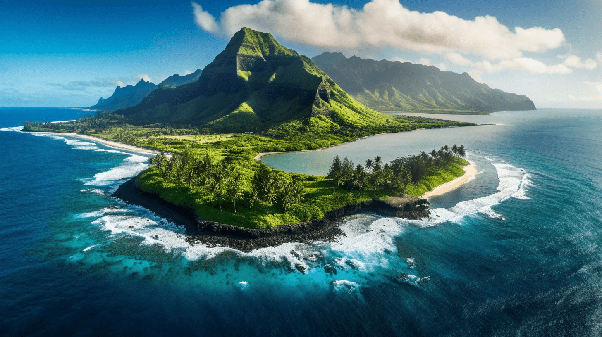

The Islands of Hawaii
The Hawaiian archipelago consists of eight main islands, each with its unique geography, culture, and attractions. These islands are:
-
Hawaii (The Big Island)
Geography: The largest of the Hawaiian Islands, Hawaii, commonly referred to as the Big Island, covers an area of 4,028 square miles. It features diverse landscapes, including active volcanoes, black sand beaches, rainforests, and snow-capped mountains.
-
Maui
Geography: Known as the "Valley Isle," Maui is the second-largest island at 727 square miles. It features lush valleys, stunning beaches, and the towering Haleakalā volcano.
-
Oahu
Geography: Oahu, the third-largest island at 597 square miles, is known as "The Gathering Place." It is the most populous island and the economic and political center of Hawaii.
-
Kauai
Geography: Known as the "Garden Isle," Kauai is the fourth-largest island, covering 552 square miles. It is renowned for its lush landscapes, dramatic cliffs, and scenic beauty.
-
Molokai
Geography: Molokai, the fifth-largest island, covers 260 square miles and is known as the "Friendly Isle." It has a rural, laid-back atmosphere with strong ties to Native Hawaiian culture.
-
Lanai
Geography: Lanai, the sixth-largest island, is known as the "Pineapple Isle" due to its history as a pineapple plantation. It covers 140 square miles and offers a mix of luxury and seclusion.
-
Niihau
Geography: Niihau is known as the "Forbidden Isle" and is privately owned. It covers 69 square miles and has a small population living a traditional lifestyle.
-
Kaholawe
Geography: The smallest of the main Hawaiian Islands, Kahoolawe covers 45 square miles. It is uninhabited and has a rugged, arid landscape.